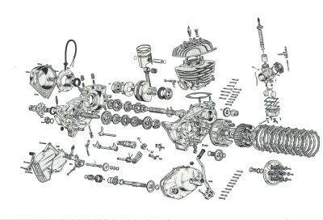
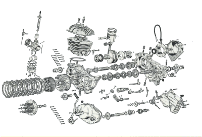

¶ It was a lazy summer, Sunday afternoon and I was napping on my bunk in the barracks. After a wonderful, deep, sleep, I was slowly awakening. You know, that wonderful place between sleep and wakefulness. Your not awake but your not asleep. That's when I first heard it... Kerthunk. I didn't really notice it at first, just background noise. Very rhythmic and steady. I didn't really think about it. Well, I woke up, stretched, and slowly got up. That's when I started to wonder, what was that noise?
I looked out the window and way over in the motorcycle parking area of the barracks behind mine, there he was. One poor old grunt, kick starting a Harley. Maybe I should say trying to kickstart a Harley. Man, did he have a leg. Now at the time I was riding a 750cc Norton Atlas twin. My Norton would always start within three kicks, but they had to be REALLY good kicks. Believe it or not, my right leg was actually bigger than my left. This guy made me look like a wimp. I started counting the kicks. I gave up after reaching 200. Most impressive. 82nd Airborne infantry, gotta love 'em. However, I was an 82nd Airborne Mechanic. No way am I going to kick a bike that many times, and neither should you. If it doesn't start in 5-10 kicks... find out WHY.
I'm always amazed at how people think. or rather don't think. They get an idea in their mind (kick it enough times and it will start), back it up with no evidence, and are genuinely surprised when it doesn't work. If you have no plan, you will send hours and hours of hard work with no reward.
So how do we do this? First of all, we have to deal with facts without adding our own idiocies to the mix. Facts or evidence come in a number of ways.
- Empirical. Evidence that is repeatable.
- Eye Witness. You saw it.
- Probability. What are the odds ?
- Historical. What has happened in the past.
- Legal. Will it hold up in a court of law.
OK, what has this to do with motorcycles? If the bike always misfires at the same RPM, that is a repeatable, empirical fact. If the customer tells you that about a problem that comes and goes, that's an eye witness fact. You are told of a thing that seems totally impossible, yet it's happening, what are the odds? The customer tells you he got this bike from a friend's brother's uncle, who had it sitting somewhere for six years. That would be historical facts. Legal? Well, I once met a guy who absolutely believed that there was a governmental agency which made sure that each bike would go as fast as the speedometer would read. If the speedo would go to 160 MPH, so would the bike. Yeah, legal stuff probably won't effect us here, unless we want to talk about the EPA... and I don't.
Why all this talk about evidence/facts? Trouble shooting will only work if you take all the facts and analyze them properly. How do I do that? I collect every fact that I can. Then in my mind I formulate several theories using the facts to back each theory. I then assign a percentage to each theory based on how likely true I think the theory is, based on the facts I have. As I learn new facts I adjust the percentages, up or down for each theory.
So, let's try this out. A guy brings in a bike and says "It won't start." We have one eye witness fact. It will not start. Now, we collect other facts. Was it sudden? Yesterday it started, today it doesn't, or has it been getting harder and harder to start till it wouldn't start any more? He says he rode it yesterday and today it kicks over but will not start. More facts. Customer says he thinks it's the carburetor. You kick it over and it kicks over way to easy. A compression test shows zero PSI. It's a two stroke dirt bike. Now Apply percentages to all the facts. He said it would not start and it was sudden and it kicks over. Electrical problems-40%, carb-40%, mechenical-20%. Once we kick it over we have a hard empirical fact... no compression. Now it's electrical- 5%, carb-5%, mechanical-90%. We run a spark check and find we have good spark.
We pull the head and the piston is melted over the exhaust port. Now it's electrical-2%, carb-5%, mechanical-93%. What? Mechanical only 93% likely to be the problem? Why is that? Well, the melted piston is what prevents it from starting, but why did it melt? Could the electronic ignition be going out, changing the timing, causing over heating? Is there an air leak at the carb or did someone play with the jetting, and not tell you about it? It can get quite complicated and you can have many different theories as to why something happened. Every fact just gives a small part of the story. Don't ever say that's impossible. Impossible just means the likelihood of that something happening is very, very low.
The big thing to remember is to develop a plan that takes in all the facts. If you have no plan, each repair will take way too long and cost way to much. Add to that the cost of missing things. If you replace that melted piston, miss the air leak at the carb AND that the spark plug was the wrong one and way too hot, you will be doing this again... Soon.

 |
 |
Copyright © 1999-2003 dansmc.com. All rights reserved.